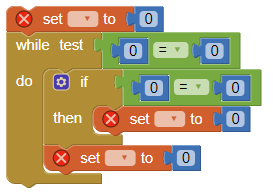
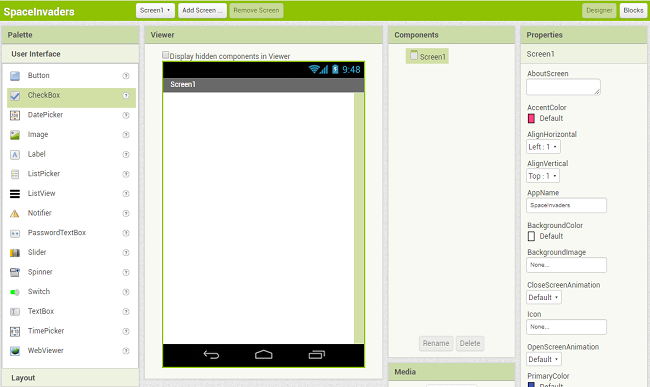
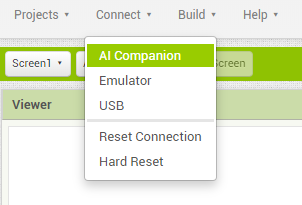
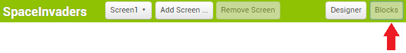
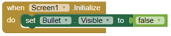
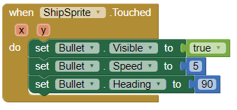
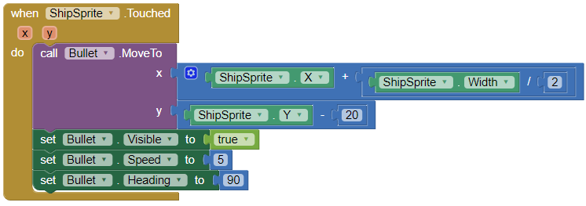
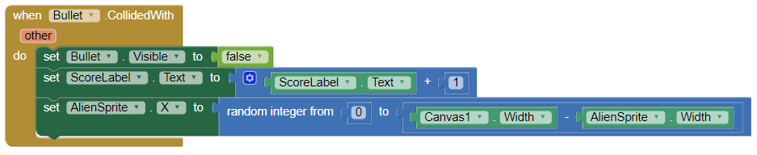
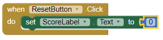

L'objectiu d'aquest CodeLab és conèixer les possibilitats de la programació visual basada en blocks per a descriure algorismes.
La programació estructurada es basa en les estructures de Seqüència, Selecció, Iteració i Recursió de blocs de sentències. Aquestes estructures i blocs es poden representar en diversos formats. El més habitual és el textual, amb els llenguatges de programació, però també es possible descriure'ls mitjançant la composició de blocks, de forma semblant a un puzzle.
En aquest CodeLab desenvoluparem un petit joc, l'SpaceInvaders, utilitzant la plataforma de desenvolupament d'aplicacións mòbils AppInventor, creada al MIT (Massachussetts Institute of Technology).
Accedeix al web http://ai2.appinventor.mit.edu i registra't.
Fes clic al botó  per a crear un nou projecte anomenat
per a crear un nou projecte anomenat

El projecte s'obrirà de forma automàtica:

Per a llançar les apps en el teu dispositiu mòbil necessitaràs la App

A la part esquerra veuràs la paleta de components, organitzada en grups. Els components s'afegeixen a la App arrossegant-los de la paleta a la pantalla del mòbil.
Necessitaràs aquestes dues imatges, desa-les al teu ordinador amb els noms


Afegeix els següents components, i realitza en cadascun l'Acció que s'indica:
Component | Grup de la paleta | Nom que li has de posar | Propòsit del component | Acció |
Canvas | Drawing and Animation | El fons on posarem els sprites |
| |
ImageSprite | Drawing and Animation | La nau del joc |
| |
ImageSprite | Drawing and Animation | L'alien del joc |
| |
BallSprite | Drawing and Animation | La bala que dispara la nau |
| |
Clock | Sensors | Usarem el cronòmetre per moure l'alien cada cert temps |
| |
Label | User Interface | Contindrà la puntuació actual |
| |
Button | User Interface | Reiniciarà el joc per a poder tornar a jugar |
|
Un cop afegits els components ha de quedar una estructura així:

Prova la App seleccionant

Al teu dispositiu mòbil inicia la MIT AI2 Companion i escaneja el CodiQR.
Per programar el comportament dels objectes canvia la vista a

Per a afegir un Block, selecciona el component i arrossega el Block a la finestra de blocs.
Moviment de la nau
En aquest joc, l'usuari mourà la nau d'un costat a un altre. Això significa que només canviarem la direcció
Selecciona el component
Dintre d'aquest block arrossega el block

Disparant la bala
Hi ha diverses funcions que volem que tingui la bala en aquest joc. Volem que dispari des de la nau, xoquin ambl'alien i siga invisible després de la col·lisió i abans de ser disparat.
Comencem utilitzant el bloc
Arrosaga el block

A continuació, volem assegurar-nos que la bala torna a aparèixer quan disparem des de la nau. Quan toquem la nau, volem que la bala comenci a moure's cap a l'alien. Ho farem utilitzant el gestor d' esdeveniments

L'últim que hem de programar és el que passa quan la bala colpeja l'alien. Utilitzarem el controlador d'esdeveniments

Si has provat el joc, t'hauràs adonat que una vegada es dispara la bala, no deixa disparar de nou. Hem de programar la bala per posar-la just en front de la nau quan el disparem. Podem fer-ho mitjançant el bloc
Modifica el block

Potser us heu adonat que si us no atinem l'alien, la bala es desplaça a la part superior de la pantalla i hi queda enganxada fins que disparem de nou. Per fer que la bala desaparegui quan arribi a la vora superior del llenç, necessitem el gestor d' esdeveniments

Moviment de l'alien
Fem el joc una mica més difícil! Ara, quan la bala xoca amb l'alien, canviem la seva ubicació. L'alien mantindrà el mateix valor Y, de manera que només haurem de canviar el X. Podem fer-ho mitjançant el bloc aleatori.
Modifica el block

Per fer-ho encara més difícil, també canviarem la posició de l'alien quan el temporitzador acaba.

Reiniciar el joc
De vegades, els usuaris poden voler reiniciar el joc i restablir la seva puntuació. Quan això succeeix, haurem de tornar la puntuació a 0.

Aquí teniu el programa complet SpaceInvaders